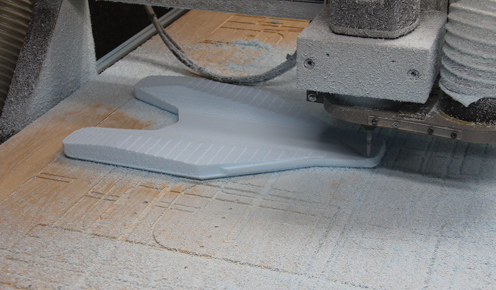
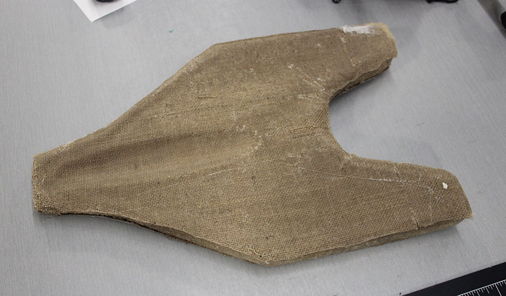

The Assignment for week 14 to use the composite process to make something combining a resin and a fiber. In class we learned about using a natural fiber to make the final item as they are not as "toxic" to work with unlike fiberglass or carbon fiber. Kayla and I ordered a two part resin from West Marine as set out to get our assignment done. I chose to work on a "hull" design for a project that I would like to work into one of my classes. For this to work I will be utilizing a space vaccuum bag to help compress and pull the resing through the material. Before any of this can be completed I needed to design the part in Inventor, upload it to Fusion 360 to get the CNC code and then mill it using our CNC router
inventor design
Inventor Hull DesignFusion 360 to CnC processing
Routing the mould

After the CNC Router was finished it was time to start working up the materials for creating the composite. I chose to incorporate the mold into my design to help the hull float in our eventual water tank. To do this I need to use 3-5 layers of burlap mixed with resin in order to harden completely. due to the shape of the hull I experimented with using some spray adhesive to keep the first layer of burlap flat and prevent bunching. I then proceeded to layer up resin soaked burlap for a total of 3 layers. Once the burlap was down I needed to apply a layer of breather material and release material over the resin/burlap and place it in the vaccuum bag for curing.
attaching first layer of burlap with spray adhesive
The rest of the layers ready to go
After I had the various layers mould, burlap, release and breather layers ready to go. I then mixed our resin in a 2:1 resing to hardner ratio and brushed it on. I would have snapped photos of this prpcess except that it requires protective gloves and is quite messy. I was the only one in the lab today so I decided against wasting time and materials using multiple pairs of gloves in order to take the laying up process. The applying of resin is quite messy and you have a limited "pot time" to get everything done. The hardest part of this process wasa actually getting the whole mess into the bag while trying to avoid making a mistake and overlapping layers.
composite and resing material in vaccuum bag
Final result after curing. I noticed that some of the resin/burlap was not completely covered. I think next time I need to use a little more resin to get a smooth finish.
For this project we used a two part resin to make the composit. As with any chemical/material you need to carefully read the information for the material you are using. For this specific material general safety and ppe procedures should be used. I made sure to use protective gloves, eyewear, good ventilation as well as an overcoat to protect myself from the resin. Our lab is also equipped with an eyewash station in case of contact with your eyes. The full safety and technical data can be found here:
MSDS sheet Technical Data SheetThis is StoneWork, a free, fully standards-compliant CSS template designed by TEMPLATED. The photos in this template are from Fotogrph. This free template is released under the Creative Commons Attribution license, so you're pretty much free to do whatever you want with it (even use it commercially) provided you give us credit for it. Have fun :)